Kiến trúc Marathon có thể được đặt trong nhóm Industrial Sci-Fi Architecture – kiến trúc công nghiệp khoa học viễn tưởng.
Công trình có quy mô khổng lồ, tạo cảm giác áp bức con người trước những khối kiến trúc vĩ đại.
Sự phân chia rõ rệt giữa khu vực chức năng vận hành và khu vực lưu thông huyết mạch.
Công trình nhân tạo tạo nên sự đối lập mạnh mẽ với bầu khí quyển và môi trường hành tinh.
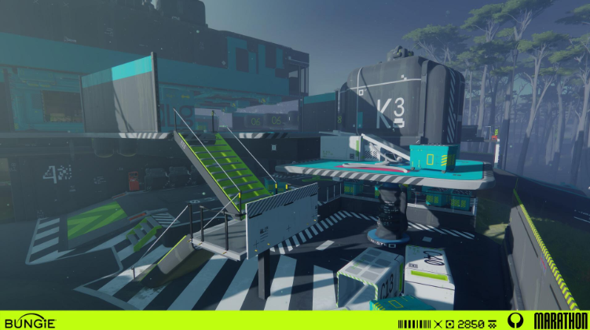
// COLLECTION OF ART ENVIROMENT
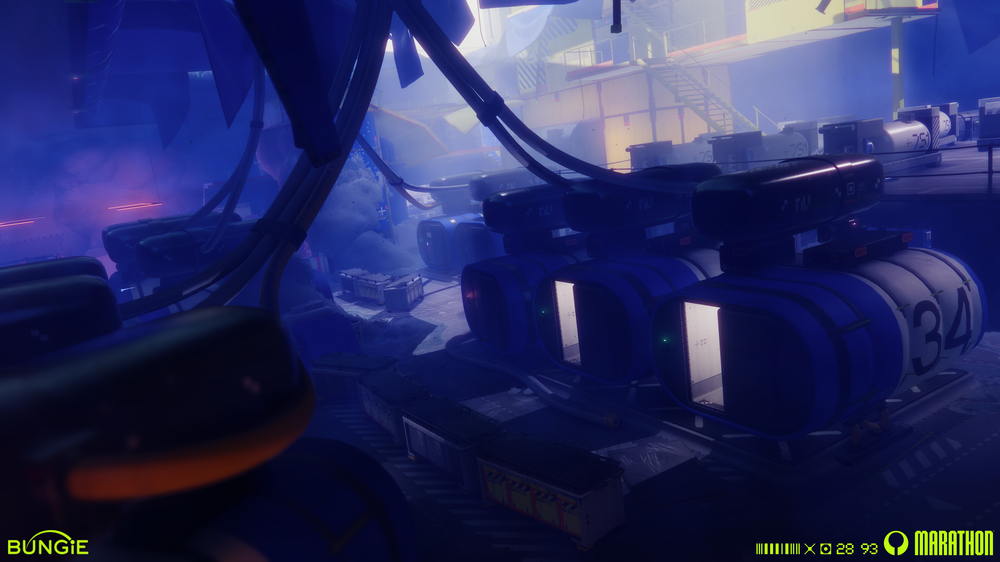
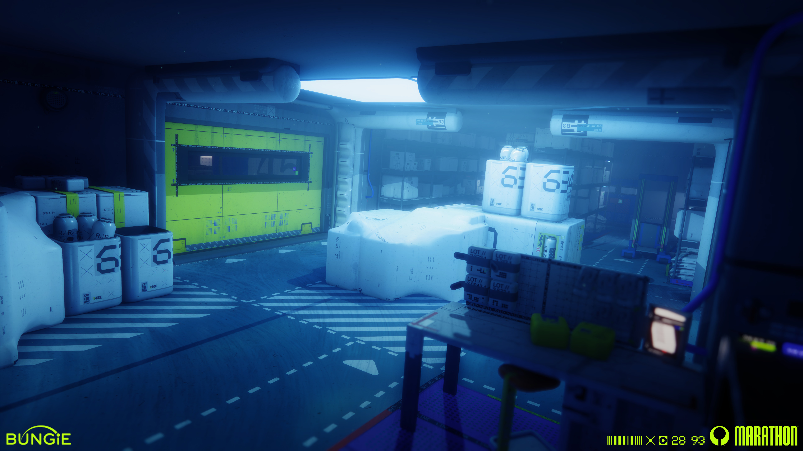
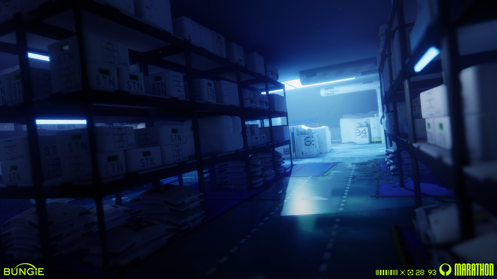
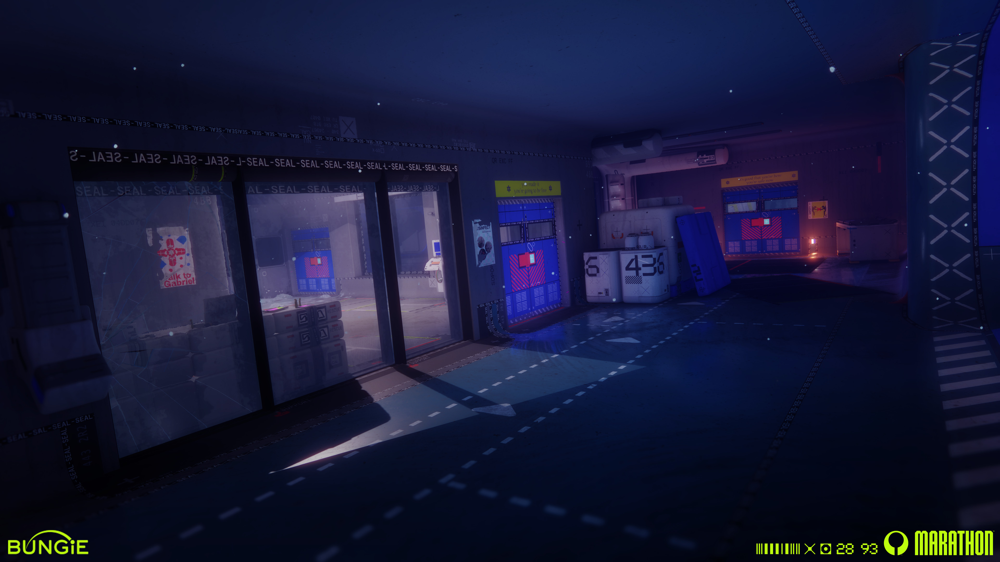
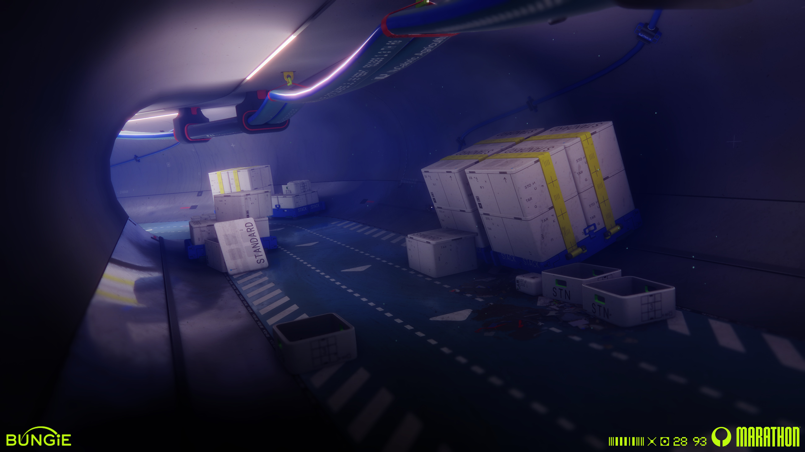
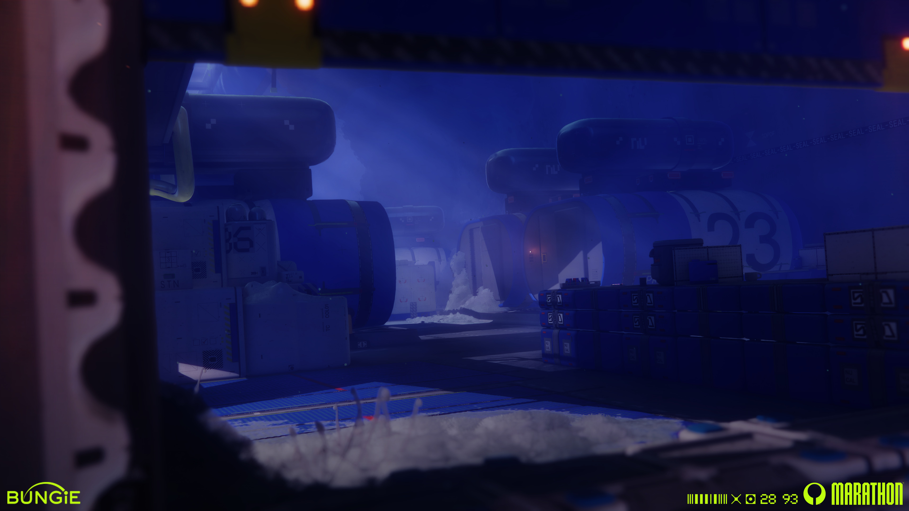
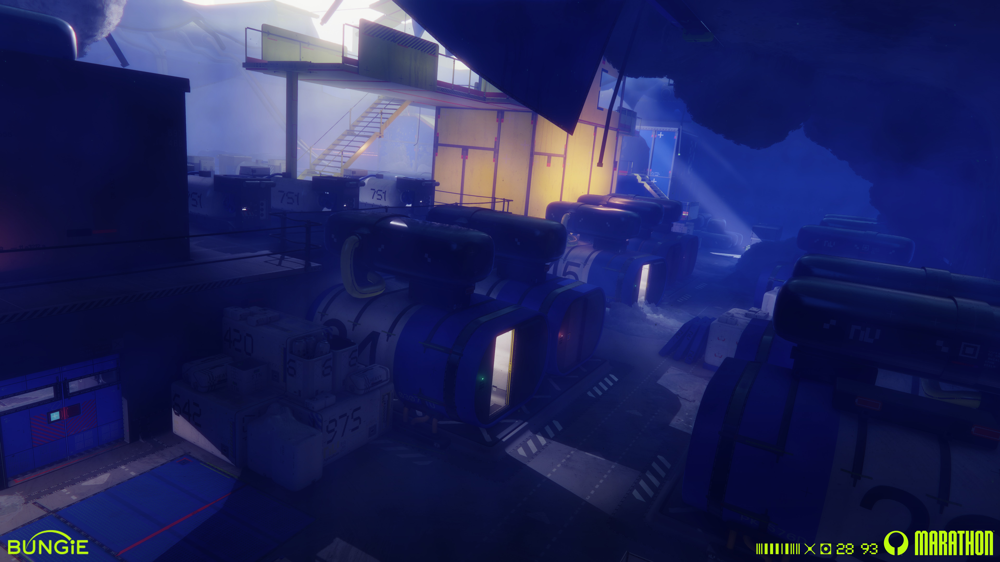
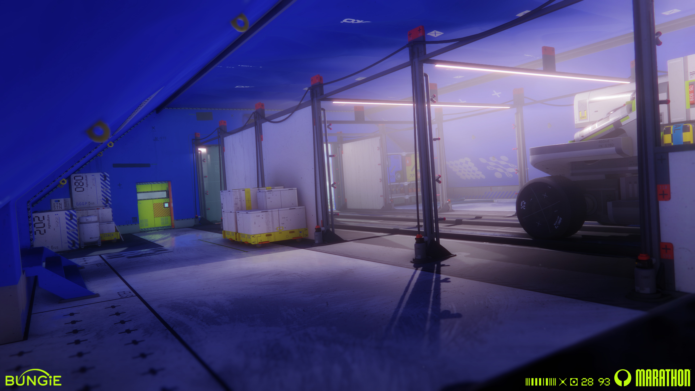
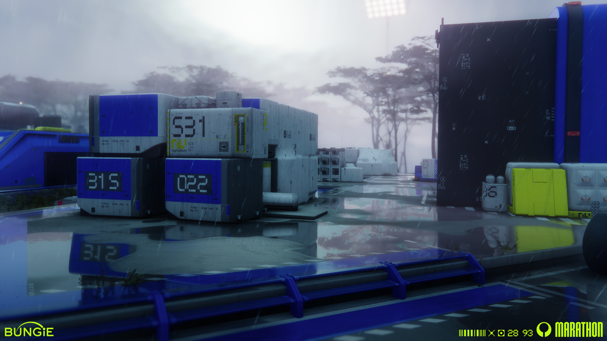
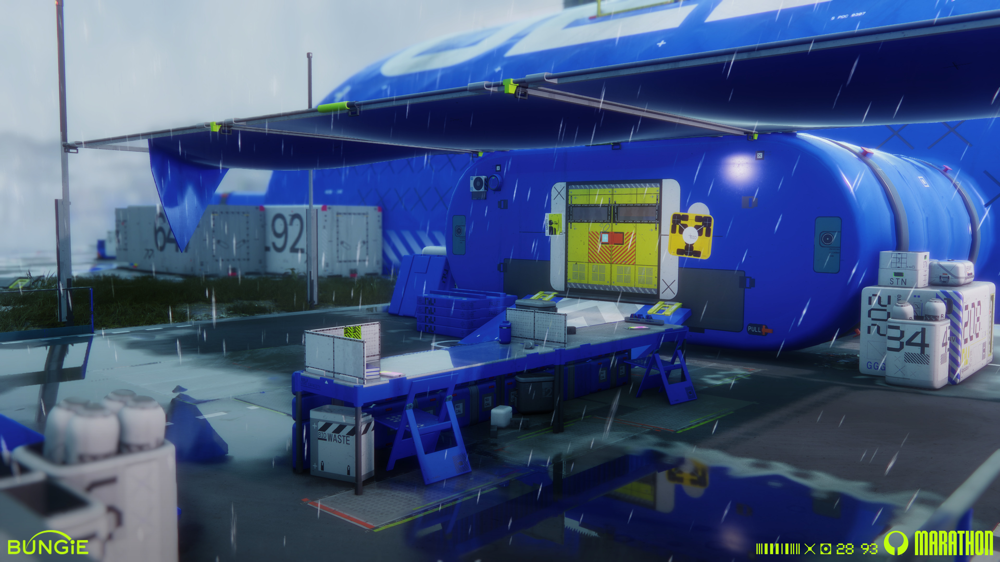
Những công trình có đường nét rõ ràng và cấu trúc hình khối trở thành điểm nhấn giữa cảnh quan tự nhiên rộng lớn, đồng thời nhấn mạnh sự hiện diện của con người trong một môi trường không thuộc về Trái Đất. Kiến trúc ở đây không chỉ thể hiện khả năng công nghệ vượt trội của con người trong tương lai mà còn phản ánh nỗ lực khai phá, tổ chức và kiểm soát không gian trước một hệ sinh thái xa lạ.
Bên cạnh sự đối lập, yếu tố tự nhiên còn có khả năng liên kết các bối cảnh trò chơi với nhau, tạo trải nghiệm game chân thực, gần gũi, không bị quá xa lạ trong một môi trường mới. Qua đó, môi trường tự nhiên không chỉ đóng vai trò trang trí mà trở thành một thành phần có ảnh hưởng đến cấu trúc và trải nghiệm không gian trong game.
| KHÔNG GIAN | ĐẶC ĐIỂM TẠO HÌNH | VAI TRÒ ĐỒ HỌA |
|---|---|---|
| Môi trường tự nhiên | Địa hình ngoài hành tinh, thảm thực vật và hệ sinh thái lạ | Tạo cảm giác xa lạ |
| Môi trường nhân tạo | Công trình công nghiệp, cơ sở nghiên cứu, khu khai thác | Thể hiện dấu ấn con người |
| Không gian nối tiếp | Hành lang, khu vực kết nối, vùng giao thoa giữa tự nhiên và nhân tạo | Tạo chiều sâu và dẫn dắt người chơi |
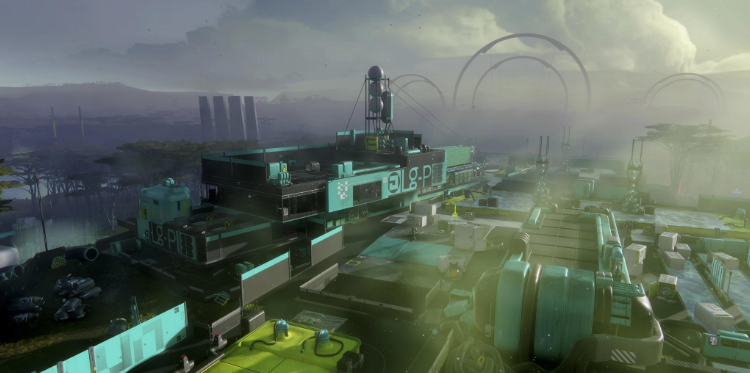